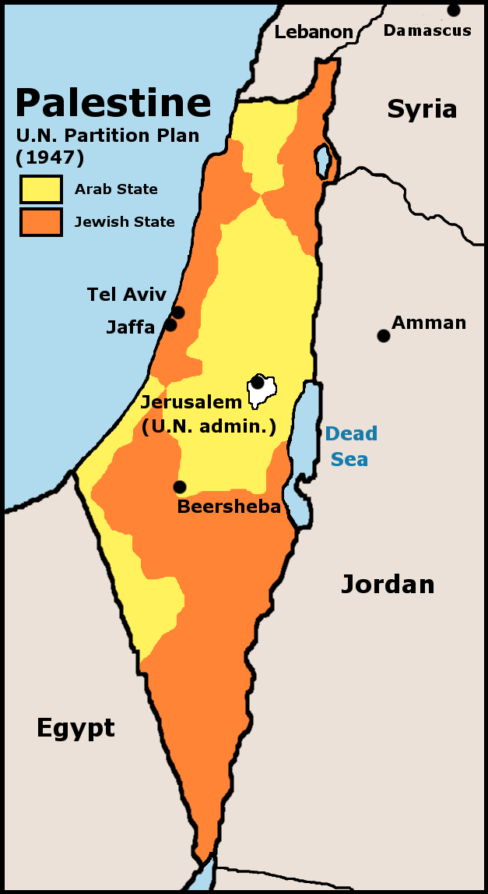

איך עונים: בכל שאלה — שימו לב לפועל: הציגו = עובדה קצרה · הסבירו = סיבה + פיתוח · בססו על המקור = ציטוט/הפניה לקטע.
- פרק 4 — עלייה, קליטה וכור ההיתוך — עדיפות #1. המורה חילקה על כך סיכום מפורט = כמעט ודאי שתופיע שאלה. שלוט בעל-פה. ≈ 33 נק' "בטוחות"
- פרק 3 — הקמת המדינה — עדיפות #2. נרטיב ברור (החלוקה → המלחמה) שקל לזכור.
- פרק 2 — לאומיות וציונות — גיבוי. אם נבחרים 2 מתוך 3 פרקים — זה הפרק שאפשר לוותר עליו אם הזמן קצר.
🏛️ פרק 2 — לאומיות וציונות
מהי לאומיות? מושג יסוד
- לאומיות מודרנית – תודעה של קבוצת אנשים שיש להם מכנה משותף (שפה, היסטוריה, תרבות, מוצא), הרואים עצמם כאומה וזכאים להגדרה עצמית (מדינה משלהם).
- הציונות – תנועת הלאומיות של העם היהודי: הקמת בית לאומי לעם היהודי בארץ-ישראל.
הגורמים לצמיחת הלאומיות באירופה שאלה חוזרת מאוד
השכלה · רומנטיקה · מהפכה צרפתית · תעשייה.
הסבר מהיר: ההשכלה נתנה את הרעיון (העם ריבון) · הרומנטיקה נתנה את הרגש (גאווה בשפה ובעבר) · המהפכה הצרפתית הראתה דוגמה מעשית · התעשייה יצרה את התנאים (ערים, עיתונות, תחבורה).
מאפיינים ודרכי פעולה של התנועות הלאומיות
- מאפיינים: מנהיג כריזמטי · אידאולוגיה/רעיון מגבש · סמלים לאומיים (דגל, המנון) · עיתונות ושפה משותפת · ארגון/קונגרס.
- דרכי פעולה: הקמת מסגרת מאחדת (קונגרס) · גיוס תמיכת מעצמות · התיישבות · חינוך והפצת השפה · מאבק מדיני/צבאי.
הציונות: הרצל ותוכנית בזל (1897)
- תאודור הרצל – מייסד הציונות המדינית; כינס את הקונגרס הציוני הראשון בבזל (1897).
- תוכנית בזל – המטרה: "בית לאומי לעם היהודי בארץ-ישראל מובטח במשפט הציבורי". אמצעים: התיישבות, ארגון יהדות העולם, חיזוק הרגש הלאומי, פעולה דיפלומטית להשגת הסכמת המעצמות.
הצהרת בלפור (2 בנובמבר 1917) כמעט בכל שנה
- מה זה: מכתב של שר החוץ הבריטי בלפור, שבו בריטניה מביעה תמיכה בהקמת "בית לאומי לעם היהודי" בארץ-ישראל.
- כיצד קידמה את הציונות: (1) הכרה בין-לאומית ראשונה של מעצמה בזכות היהודים על הארץ; (2) בסיס משפטי שנכלל אחר כך בכתב המנדט (1922); (3) חיזוק מעמד התנועה הציונית ועידוד עלייה והתיישבות.
שאלות סבירות + תשובות לדוגמה
הסבירו שניים מן הגורמים לצמיחת הלאומיות באירופה במאה ה־19. חוזרת מאוד
⚡ תזכורת מהירה: השכלה (רעיון: העם ריבון) + רומנטיקה (רגש: גאווה בשפה ובעבר).
תשובה:1. רעיונות ההשכלה — הוגי ההשכלה הדגישו שהעם הוא הריבון (ולא המלך), ושלכל אדם זכות לחירות ולשוויון. רעיונות אלה הולידו את התביעה שכל אומה תנהל את עצמה במסגרת מדינה משלה — בסיס לרעיון הלאומי.
2. התנועה הרומנטית — הרומנטיקה העריצה את הייחוד של כל עם: שפתו, עברו ההיסטורי, הפולקלור והמסורת. כך התחזקה הגאווה הלאומית והרצון של כל עם לשמר את זהותו ולהקים מדינה לאומית.
(אפשר גם: המהפכה הצרפתית וכיבושי נפוליאון שהפיצו את רעיון הריבונות; המהפכה התעשייתית שיצרה ערים, עיתונות ותחבורה שאיחדו את האומה.)
הציגו את עיקרי הצהרת בלפור והסבירו כיצד קידמה את מטרות התנועה הציונית. חוזרת מאוד
⚡ תזכורת מהירה: 1917, בריטניה תומכת ב"בית לאומי" → הכרה בין-לאומית ראשונה, נכנסה לכתב המנדט.
תשובה:עיקרי ההצהרה: ב־2.11.1917 הצהירה ממשלת בריטניה כי היא רואה בעין יפה הקמת בית לאומי לעם היהודי בארץ-ישראל, ותשתדל לסייע להשגת מטרה זו (תוך שמירה על זכויות הקהילות הלא-יהודיות).
כיצד קידמה את הציונות: זו הייתה ההכרה הבין-לאומית הראשונה של מעצמה גדולה בזכות העם היהודי על הארץ; היא העניקה לתנועה הציונית לגיטימציה ומעמד מדיני; ועיקריה שולבו בכתב המנדט שאישרה חבר הלאומים (1922) — וכך הפכו לבסיס חוקי לעלייה ולהתיישבות.
הציגו שני שינויים שחוללה הלאומיות במפה המדינית של אירופה בסוף המאה ה־19 ותחילת ה־20. חוזרת
⚡ תזכורת מהירה: איחוד מדינות מפוצלות (איטליה/גרמניה) + פירוק אימפריות רב-לאומיות.
תשובה:1. איחוד מדינות מפוצלות — עמים שהיו מפוצלים לנסיכויות התאחדו למדינות לאום (למשל איחוד איטליה ואיחוד גרמניה).
2. פירוק אימפריות רב-לאומיות — עמים ששאפו לעצמאות פרשו מאימפריות גדולות (כמו האימפריה העות'מאנית והאוסטרו-הונגרית) והקימו מדינות לאום חדשות.
🗳️ פרק 3 — המאבק על הקמת מדינת ישראל
ציר זמן 1945–1949 תמונת על
המאבק במדיניות בריטניה (1945–1947)
אחרי מלחמת העולם השנייה בריטניה המשיכה במדיניות "הספר הלבן" שהגבילה עלייה והתיישבות. היישוב נאבק בשלושה אפיקים:
- מאבק צבאי — "תנועת המרי העברי" (הגנה, אצ"ל, לח"י): פיצוץ גשרים, פעולות נגד מתקנים בריטיים.
- העפלה — עלייה בלתי-לגאלית בים: בין 1945 ל-1948 ניסו לעלות כ-84,000 מעפילים (פרשת "אקסודוס").
- התיישבות — הקמת יישובים חדשים (למשל מבצע "11 הנקודות בנגב") כדי לקבוע עובדות בשטח.
המטרה המשותפת: להכשיל את שלטון המנדט ולהביא לסיומו → העברת השאלה לאו"ם.
תוכנית החלוקה — כ"ט בנובמבר 1947 שאלה חוזרת מאוד

שימו לב לרצף הלא-טריטוריאלי: כל מדינה מורכבת מ-3 חבלי ארץ המחוברים בנקודות מגע.
- הסעיפים העיקריים: (1) הקמת מדינה יהודית; (2) הקמת מדינה ערבית; (3) ירושלים – אזור בין-לאומי בפיקוח האו"ם; (4) קשר כלכלי בין שתי המדינות.
- מדוע ארה"ב וברה"מ תמכו: ארה"ב — לחץ דעת קהל ורגישות אחרי השואה; ברה"מ — רצון להוציא את בריטניה מהמזרח התיכון ולהגביר את השפעתה.
- התגובות: ההנהגה הציונית קיבלה בשמחה (הגשמת חזון המדינה); "הוועד הערבי העליון" דחה וסירב לכל חלוקה — ופרצה מלחמה.
מלחמת העצמאות — שני שלבים
- שלב א׳ (מגננה): מול ערביי הארץ. קשיים: בידוד יישובים, מצור על ירושלים, מיעוט נשק, היעדר צבא סדיר.
- הקמת צה"ל (מאי 1948): איחוד הארגונים לצבא אחד — חיוני למעבר ממגננה למתקפה ולניצחון.
- שלב ב׳ (מתקפה): אחרי ההכרזה פלשו צבאות ערב; צה"ל בלם ועבר למתקפה. המלחמה הסתיימה בהסכמי שביתת נשק (1949).
- בעיית הפליטים הפלסטינים: נוצרה עקב בריחה ומגירוש בזמן המלחמה; גורמים — מהלכי הקרבות, קריאות מנהיגים ערבים לעזוב, פחד, וגם פעולות צבאיות.
שאלות סבירות + תשובות לדוגמה
הציגו שלושה מן הקשיים של היישוב היהודי בשלב הראשון של מלחמת העצמאות. חוזרת מאוד
⚡ תזכורת מהירה: נחיתות בנשק/כוח-אדם · יישובים מבודדים וירושלים במצור · המשך השלטון הבריטי.
תשובה (שלושה קשיים):1. נחיתות בנשק ובכוח אדם — ליישוב לא היה צבא סדיר ולא נשק כבד, מול כוחות ערביים מאומנים.
2. יישובים מבודדים ודרכים חסומות — קשה היה להגן על יישובים מרוחקים ועל השיירות; ירושלים הייתה במצור.
3. המשך השלטון הבריטי עד מאי 1948 — הבריטים הקשו על התארגנות הצבאית ועל הכנסת נשק ועולים.
הציגו שלושה סעיפים עיקריים בתוכנית החלוקה, והסבירו את תגובת היהודים והערבים. חוזרת מאוד
⚡ תזכורת מהירה: מדינה יהודית + מדינה ערבית + ירושלים בין-לאומית. היהודים קיבלו, הערבים דחו.
תשובה:סעיפים: (1) הקמת מדינה יהודית; (2) הקמת מדינה ערבית; (3) ירושלים כאזור בין-לאומי בפיקוח האו"ם.
תגובת היהודים: ההנהגה הציונית קיבלה את התוכנית בשמחה — היא הגשימה את החזון של מדינה יהודית עצמאית, גם אם בשטח מצומצם.
תגובת הערבים: "הוועד הערבי העליון" דחה נחרצות כל חלוקה של הארץ, ופתח במאבק אלים שהתפתח למלחמה.
הסבירו את החשיבות של הקמת צה"ל במהלך מלחמת העצמאות. חוזרת
⚡ תזכורת מהירה: איחוד הארגונים → פיקוד אחיד → מעבר ממגננה למתקפה = תנאי לניצחון.
תשובה: עד מאי 1948 פעלו ארגונים נפרדים (הגנה, אצ"ל, לח"י). איחודם לצבא לאומי אחד (צה"ל) יצר פיקוד מרכזי אחיד, מנע אנרכיה ופילוג, ואיפשר תכנון אסטרטגי ומעבר ממגננה למתקפה מתואמת — תנאי הכרחי לבלימת צבאות ערב ולניצחון במלחמה.👥 פרק 4 — עלייה, קליטה וכור ההיתוך נושא בעדיפות עליונה
| מרכיב | מה חייבים לזכור |
|---|---|
| העלייה ההמונית (1948–1951) |
ביטול הגבלות הבריטים → כ-700,000 עולים ב-3 שנים; האוכלוסייה (~650 אלף) הוכפלה. מקורות: ניצולי שואה (פולין ~106 אלף, רומניה ~118 אלף) + ארצות האסלאם. |
| "על כנפי נשרים" | תימן, ~50 אלף. עולי תימן עברו מסע רגלי מפרך למחנות המעבר בעדן (צפיפות ותנאים קשים) עד להטסתם. |
| "עזרא ונחמיה" | עיראק, ~123 אלף. |
| "כור ההיתוך" | חשש מ"בליל קבוצות" → מיזוג גלויות לדמות אחת: ה"צבר" (חלוץ, עובד אדמה, לוחם, דובר עברית). בן-גוריון ראה בחינוך כלי ל"זיקוק" העולה. |
| שלילת הגלות + צה"ל | זניחת שפות ומסורות "גלותיות"; צה"ל מחנך לעברית ולערכי המדינה; רבים נדרשו לעבר את שמותיהם. |
| המעברות | מחנות מגורים זמניים → צפיפות, עוני, אבטלה, תחלואה ותלות בסיוע. |
| "החינוך האחיד" | במעברות נכפה חינוך אחיד חילוני → נתק בין-דורי. התנגדות עולי תימן: מניעת לימוד תורה, גזיזת פאות, ואיומים על דיור/תעסוקה. |
| ועדת פרומקין (1950) |
מצאה פגיעה שיטתית בחינוך הדתי → האחריות עברה לגוף ממשלתי שיאפשר בחירה בין דתי לחילוני. |
| עדות מעברת "חאלסה" | ניסיון להחליף את מסורת ילדי תימן בערכי "תנועת נוער" — בדיעבד "טיפשות חינוכית". |
| סיכום התהליך | המדיניות ראתה בגיוון התרבותי איום על הלכידות הלאומית; השתנתה בהדרגה (שנות ה-70 וה-90). |
העלייה ההמונית (1948–1951)
- עם הקמת המדינה בוטלו הגבלות העלייה הבריטיות → גל עלייה חסר תקדים ("העלייה ההמונית").
- שני מקורות עיקריים: ניצולי שואה מאירופה (פולין ~106 אלף, רומניה ~118 אלף) ויהודים מארצות האסלאם.
מבצעי העלייה מארצות האסלאם
מדיניות "כור ההיתוך" "מהי מדיניות כור ההיתוך?" – נשאל ישירות
- הגדרה: מדיניות "מיזוג גלויות" שנועדה להתיך את כל העולים מתרבויות שונות לזהות ישראלית אחידה אחת — דמות ה"צבר" (צעיר, חלוץ, עובד אדמה, לוחם, דובר עברית).
- הרציונל: ההנהגה (בן-גוריון) חששה ש"בליל" של קבוצות ושפות יפורר את הלכידות הלאומית.
- שלילת הגלות: דרישה לזנוח שפות ומסורות "גלותיות"; צה"ל שימש כלי מרכזי לעברות ולחינוך לערכי המדינה (כולל עברות שמות).
קליטת העלייה: המעברות והקשיים
- המעברות: מחנות מגורים זמניים (אוהלים/פחונים) שנועדו לקלוט את ההמונים. הקשיים: צפיפות, עוני, אבטלה, תנאי תברואה קשים, ותלות בסיוע המדינה.
- "החינוך האחיד" ומשבר הדת: במעברות נכפה חינוך אחיד שנטה לחילוניות → התנגדות עולי תימן וארצות האסלאם (טענות על מניעת לימוד תורה ואף גזיזת פאות).
- ועדת פרומקין (1950): ועדת חקירה שקבעה כי הייתה פגיעה שיטתית בחינוך הדתי; בעקבותיה הועברה האחריות לחינוך לגוף ממשלתי שאיפשר בחירה בין חינוך דתי לחילוני.
- מאורעות ואדי סאליב (1959): מחאת עולי צפון אפריקה בחיפה על קיפוח ואפליה — ביטוי לכישלון "כור ההיתוך" ולפער העדתי.
ובראשי-תיבות: צע"ב + פגיעה בזהות — צפיפות, עוני/אבטלה, בריאות/תברואה.
דה-קולוניזציה וגורל היהודים בארצות האסלאם
- דה-קולוניזציה: תהליך שחרור המושבות מהשלטון הקולוניאלי האירופי (בעיקר אחרי מלה"ע השנייה) וקבלת עצמאות.
- גורמים: היחלשות המעצמות האירופיות אחרי המלחמה · התחזקות תנועות לאומיות מקומיות · לחץ בין-לאומי (ארה"ב/ברה"מ/או"ם).
- ההשפעה על היהודים: עליית לאומיות ערבית-מוסלמית והזדהות עם הסכסוך נגד ישראל → היהודים נתפסו כ"זרים"/"ציונים"; גברו רדיפות, פרעות והגבלות → עזיבה/בריחה ועלייה לישראל.
שאלות סבירות + תשובות לדוגמה
מהי מדיניות "כור ההיתוך"? נשאלה מילה במילה
⚡ תזכורת מהירה: מיזוג כל העדות לזהות ישראלית אחת — דמות ה"צבר" דובר העברית.
תשובה: "כור ההיתוך" (מיזוג גלויות) היא המדיניות שהנהיגה הנהגת המדינה בשנותיה הראשונות, שמטרתה הייתה למזג את כל העולים — מארצות ומתרבויות שונות — לזהות לאומית ישראלית אחת ואחידה. העולים נדרשו לזנוח את שפותיהם ומסורותיהם ה"גלותיות" ולאמץ את דמות ה"צבר" (עברית, חלוציות, עבודת אדמה). ההנחה הייתה שריבוי תרבויות מסכן את הלכידות הלאומית של החברה הצעירה.הציגו שתי פעולות שנקטה המדינה בקליטת העלייה, והסבירו איזה קושי נוצר בעקבות כל אחת. חוזרת מאוד
⚡ תזכורת מהירה: מעברות (→ תנאים קשים) + כור-היתוך/חינוך אחיד (→ פגיעה בזהות).
תשובה:1. הקמת המעברות — מחנות זמניים לקליטת ההמונים. הקושי: תנאי חיים קשים — צפיפות, עוני, אבטלה ותחלואה — שיצרו תסכול ותחושת זמניות ממושכת.
2. מדיניות "כור ההיתוך" / חינוך אחיד — ניסיון לעצב זהות ישראלית אחידה. הקושי: פגיעה בזהות התרבותית והדתית של העולים (במיוחד מארצות האסלאם), נתק בין-דורי ותחושת קיפוח — שהתפרצה במחאות כמו ואדי סאליב.
הסבירו את ההשפעה של תהליך הדה-קולוניזציה על מצב היהודים בארצות האסלאם. חוזרת מאוד
⚡ תזכורת מהירה: לאומיות ערבית מתחזקת → יהודים נתפסים כ"זרים" → רדיפות → עלייה לישראל.
תשובה: עם שחרור ארצות האסלאם מהשלטון הקולוניאלי התחזקה בהן הלאומיות הערבית-מוסלמית, שהזדהתה עם המאבק נגד מדינת ישראל שזה עתה קמה. כתוצאה מכך הורע מצב היהודים: הם נתפסו כ"זרים" וכ"ציונים", סבלו מרדיפות, אלימות, פרעות, חרמות והגבלות כלכליות ומשפטיות. תחושת חוסר הביטחון הגוברת הניעה רבים מהם לעזוב ולעלות לישראל במסגרת מבצעי העלייה.הציגו את שתי העמדות בוויכוח בהנהגה בנוגע למדיניות העלייה בשנות ה-50. חוזרת
⚡ תזכורת מהירה: עלייה ללא הגבלה (בן-גוריון, חובה מוסרית) מול עלייה מבוקרת (לפי יכולת קליטה).
תשובה:עמדה 1 — עלייה ללא הגבלה ("קיבוץ גלויות"): חובה מוסרית וציונית להציל כל יהודי ולהביאו מיד, ללא תנאים — בראש ובראשונה בן-גוריון.
עמדה 2 — עלייה מבוקרת/סלקטיבית: יש לווסת את קצב העלייה לפי יכולת הקליטה הכלכלית של המדינה (דיור, תעסוקה, בריאות), כדי למנוע קריסה כלכלית ותנאי קליטה בלתי-אפשריים.
✍️ טכניקת מענה — איך להרוויח נקודות
| הפועל בשאלה | מה עליי לעשות |
|---|---|
| הציגו / ציינו | לכתוב עובדה/נתון בקצרה — בלי הסבר ארוך. |
| הסבירו | עובדה + פיתוח: למה זה קרה / מה ההשפעה / איך זה קשור. |
| בססו על המקור | חובה לצטט או להפנות לשורה/ביטוי בקטע — אחרת מורידים נקודות. |
| השוו / מהי המחלוקת | להציג שני צדדים במפורש ("מצד אחד… מצד שני…"). |
- שאלה ששווה 17 נק' ומבקשת "שני גורמים" → תכתבו שני גורמים מלאים, לא אחד.
- ענו בדיוק על מה שנשאל — לא "לשפוך" כל מה שאתם יודעים על הנושא.
- חלקו את הזמן לפי הנקודות; אל תיתקעו על שאלה אחת.
- שאלת מקור — קראו קודם את השאלה, ואז חפשו בקטע את מה שצריך.
✅ צ׳ק־ליסט אחרון — ערב הבחינה
| נושא | אני יודע/ת להסביר… |
|---|---|
| לאומיות | 4 גורמים לצמיחתה (ה־ר־מ־ת) · מהי הצהרת בלפור וכיצד קידמה את הציונות |
| הקמת המדינה | 3 דרכי המאבק בבריטים (מע"ה) · סעיפי החלוקה ותגובות · 3 קשיים בשלב א׳ · חשיבות צה"ל |
| עלייה וקליטה | מהי מדיניות כור ההיתוך · 2 מבצעי עלייה · קשיי המעברות · ועדת פרומקין · דה-קולוניזציה |